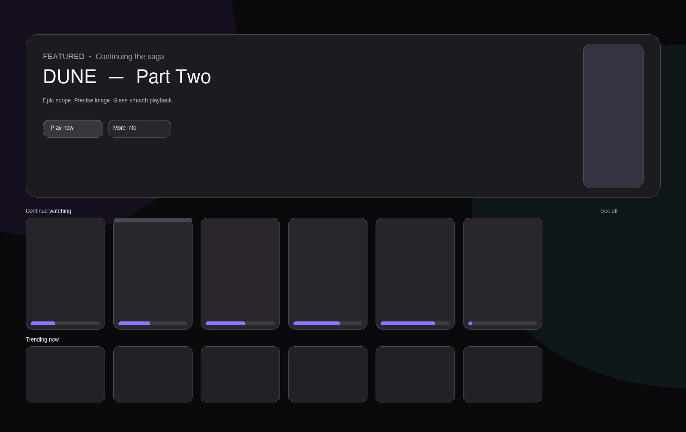

Release 1.0.0 — the redesign
The OG Stremio,
built like glass.
OG Stremio with an updated ui
A fully redesigned interface, enhanced instant live streaming playback, , user profiles integration, proxy configuration, and more...
Stremio-Plus-1.0.0-x64.dmg · Apple silicon & Intel · 12.0+
- Live streaming
- Instant stream playback
- Profiles
- Per-user libraries
- Audio
- Normalised volume
- Network
- Proxy configuration

What's new
Introducing profiles
Share an account with up to 4 people. Separate libraries, playback history and personal achievements and watch stats tailored to your space
Lives playback
We improved live content playback. Watch high quality live sports streams, tv and broadcast in real time.
Audio normalisation
Normalisation toggle — no more reaching for the volume key at every dialogue and loud explosion.
Whisper-to-explosion
Dialogue stays clear, explosions stay controlled without riding the volume keys.
Zero-latency, on-device
Processed locally in the audio pipeline. No round-trip, no extra buffering.
Per-profile memory
Toggle remembers your preference per profile. Turn it on once.
Proxy configuration
Bypass network blocks and regional restrictions. 100% privacy and fluid connection.
Add-on flexibility
Full add-on catalogue support with per-profile install scopes and manual manifest URLs.
First launch
The app is unsigned, so every OS shows one warning on first open. Clear it once and later launches stay quiet.
Install
Open Stremio-Plus-1.0.0-x64.dmg and drag Stremio Plus into /Applications.
Open the first time
Right-click (Control-click) the app in Finder → Open → Open again. This whitelists it permanently.
If macOS says “damaged” or “cannot be checked”
Clear the quarantine attribute, then right-click → Open again.
Clear attributes
xattr -cr "/Applications/Stremio Plus.app"Stronger — remove quarantine
sudo xattr -rd com.apple.quarantine "/Applications/Stremio Plus.app"Remove quarantine and launch
sudo xattr -rd com.apple.quarantine "/Applications/Stremio Plus.app" && open "/Applications/Stremio Plus.app"macOS 13+ alternative: System Settings → Privacy & Security → “Stremio Plus was blocked” → Open Anyway. No spctl --master-disable needed.
Powered by DiceBear
Profile avatars are generated with DiceBear, an open source avatar library. Thanks to its maintainers and artists.
Support
Questions, bugs, errors: stremioplus.help@gmail.com
Get 1.0.0
Incremental future updates will be rolling out soon